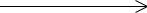

Vooskeem, kirjeldab süsteemi dünaamilisi aspekte. Mis modelleerib ühelt tegevuselt teisele liikumist.
toob välja eraldi kujundite tähendused ja kasutusnäidiseVooskeem kirjeldavad, kuidas tegevusi koordineeritakse teenuse osutamiseks, mis võib olla erineval abstraktsioonitasemel. Tavaliselt tuleb sündmus saavutada mõne toimingu abil, eriti kui toimingu eesmärk on saavutada mitu erinevat asja, mis vajavad koordineerimist, või kuidas ühe kasutusjuhtumi sündmused on omavahel seotud, eriti kasutusjuhtumite korral, kus tegevused võivad kattuda ja vajavad koordineerimist. See sobib ka modelleerimiseks, kuidas kasutusjuhtude kogum koordineerub äriprotsesside esindamiseks.
| Tegevus | Kasutatakse tegevuste kogumi esindamiseks | |
| Juhtimisvoog | Näitab teostusjärjestust |  |
| Esialgne sõlm | Kujutab tegevuste või tegevuste komplekti algust | |
| Tegevuse lõppsõlm | Peata kõik tegevuse (või toimingu) juhtimisvood ja objektivood | |
| Otsustussõlm | Esitavad testitingimust, et tagada juhtimisvoo või objektivoo liikumine ainult ühte rada pidi. |
|